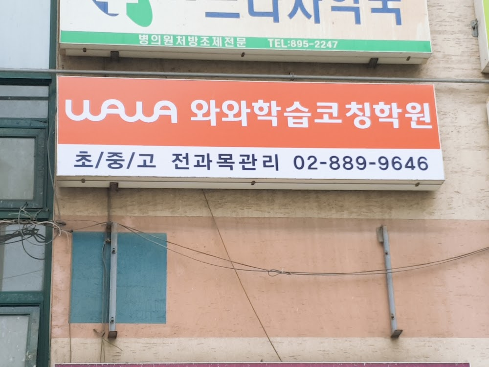
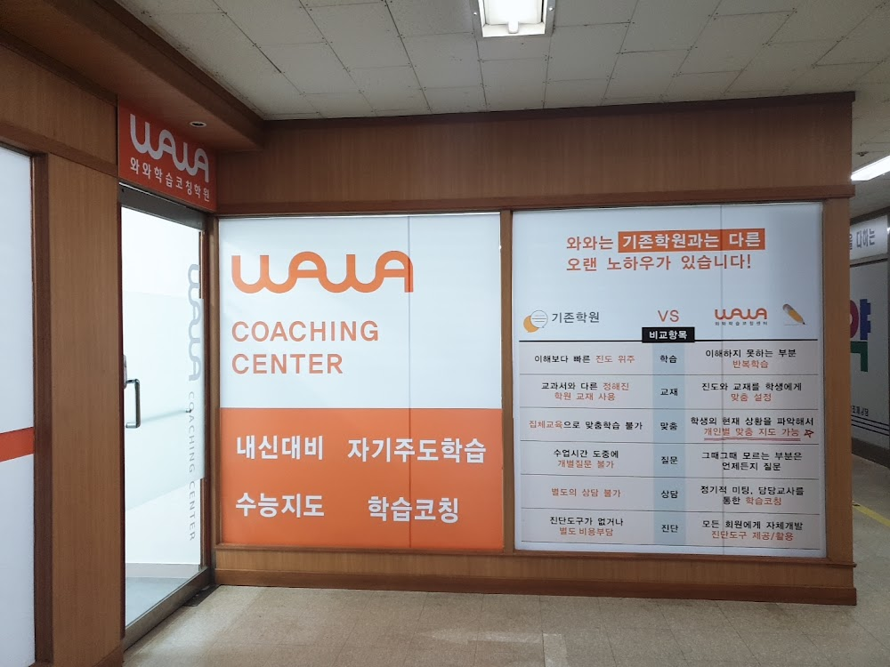

안녕하세요, 금천구 시흥동 와와학습코칭 금천점입니다. 이번 주부터 방학을 맞은 학생들이 하나둘 늘고 있습니다. 오늘은 금천점이 여름방학을 어떻게 설계하고 있는지, 그 현장을 전해드립니다.
방학은 '쉬는 기간'이 아니라 '메우는 기간'
학기 중에는 진도를 따라가느라 모르는 것을 그냥 지나치기 쉽습니다. 방학 40일은 그 구멍을 메울 수 있는 거의 유일한 시간입니다. 그래서 금천점은 방학 첫 주에 무작정 선행부터 나가지 않습니다.
대신 학생마다 1학기 시험지와 오답 노트를 펼쳐놓고, 어느 단원에서 반복해서 틀렸는지를 함께 찾습니다. 이번 주에도 학생들은 자기 시험지를 다시 보며 "여기가 계속 걸렸네요" 하고 스스로 문제를 짚어냈습니다.

하루 시간표부터 같이 짭니다
방학에 성적이 갈리는 진짜 이유는 실력이 아니라 생활 리듬입니다. 늦게 일어나 하루가 통째로 사라지는 경우가 많습니다. 금천점은 방학이 시작되면 학생과 코치 선생님이 마주 앉아 하루 시간표를 직접 그립니다.
- 기상·등원 시간을 학기 중과 비슷하게 유지하기
- 가장 집중 잘 되는 시간대에 취약 과목 배치하기
- 하루 목표는 '몇 시간'이 아니라 '몇 쪽'으로 정하기
- 주 1회는 계획을 지켰는지 스스로 돌아보기

학년마다 방학의 목표가 다릅니다
초등 학생은 공부 습관과 기초 개념을 잡는 데, 중등 학생은 2학기 내신의 기반이 되는 단원을 미리 다지는 데 집중합니다. 고등 학생은 내신과 수능형 문제를 함께 준비하며 자신만의 공부 루틴을 완성해 갑니다.
같은 방학이라도 학년과 상황에 따라 해야 할 일이 다릅니다. 금천점은 학생 한 명 한 명의 출발점을 확인하고, 그에 맞는 로드맵을 함께 그립니다. 방학이 끝날 무렵 "이번 방학은 좀 달랐어요"라는 말을 들을 수 있도록, 매일 곁에서 함께하겠습니다.
와와학습코칭 금천점은 이런 학생들과 함께합니다
시흥동 와와학습코칭(와와학습코칭 금천점)은 초등학생·중학생·고등학생 모두를 위한 자기주도학습 공간입니다. 조용한 자습실과 공부방처럼 편하게 머물며 공부할 수 있고, 영수학원·종합학원처럼 과목별 코칭도 함께 받을 수 있습니다.
- 초등학생 (초1·초2·초3·초4·초5·초6) — 공부 습관과 기초 개념부터. 시흥동 초등 영어학원·수학학원·공부방을 찾으신다면.
- 중학생 (중1·중2·중3) — 내신·서술형 대비. 시흥동 중등 영수학원·자습실이 필요한 학생에게.
- 고등학생 (고1·고2) — 내신과 수능을 함께. 시흥동 고등 종합학원·자기주도학습 코칭.
와와학습코칭 금천점 위치와 주변
- 🚇 교통 — 관악산벽산타운 중심상가 안에 있어 단지에서 바로 오실 수 있습니다 (도보권 지하철역은 없으며 버스 이용이 편리합니다)
- 🏢 인근 아파트 — 관악산벽산타운 1·2·3·5·6단지, 관악우방타운, 금광포란재, 건영남서울2차, 시흥현대 등 단지에서 도보로 오실 수 있습니다.
와와학습코칭 금천점 인근 학교
시흥동 와와학습코칭(와와학습코칭 금천점)은 인근 학교 학생들의 내신·수능을 함께 준비합니다. 아래 학교에 다니는 학생이라면 영어학원·수학학원·국어학원을 따로 찾을 필요 없이, 가까운 우리 센터에서 과목별 1:1 자기주도학습 코칭을 받을 수 있습니다.
- 인근 초등학교 — 탑동초등학교 영어학원·수학학원·국어학원
- 인근 중학교 — 동일중학교, 세일중학교 영어학원·수학학원·국어학원
- 인근 고등학교 — 매그넷고등학교, 동일여고등학교, 금천고등학교, 문일고등학교 영어학원·수학학원·국어학원
📍 와와학습코칭 금천점 센터 정보 자세히 보기 — 주소·전화·인근 학교 안내를 확인하실 수 있습니다.